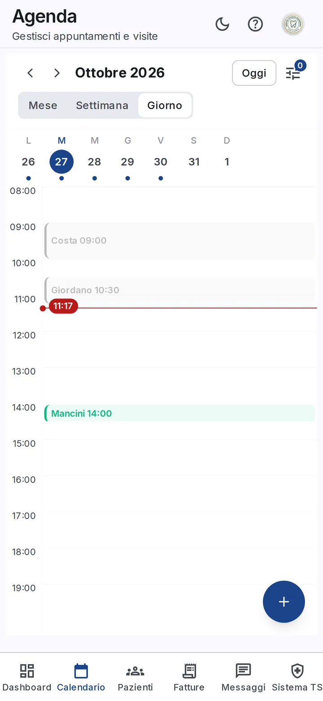
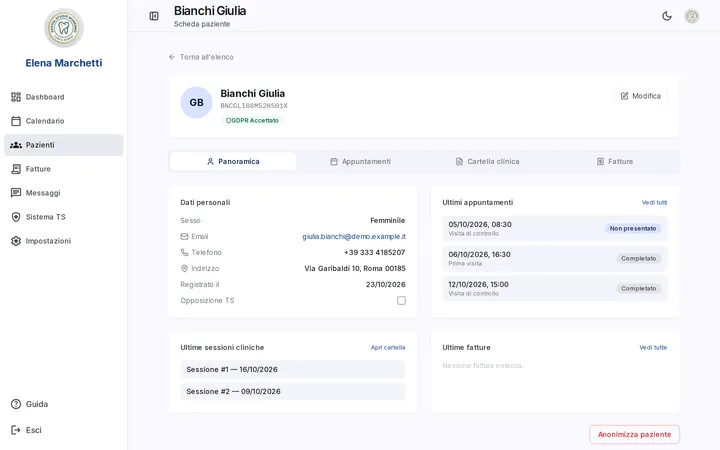
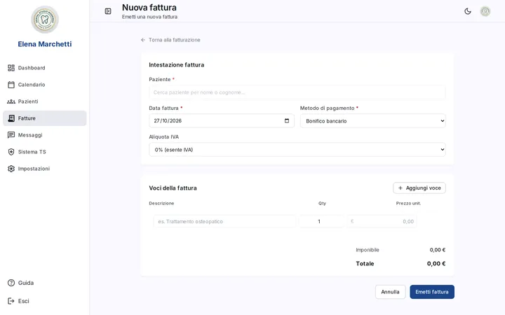
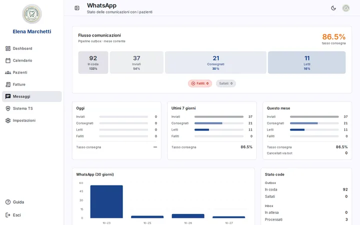
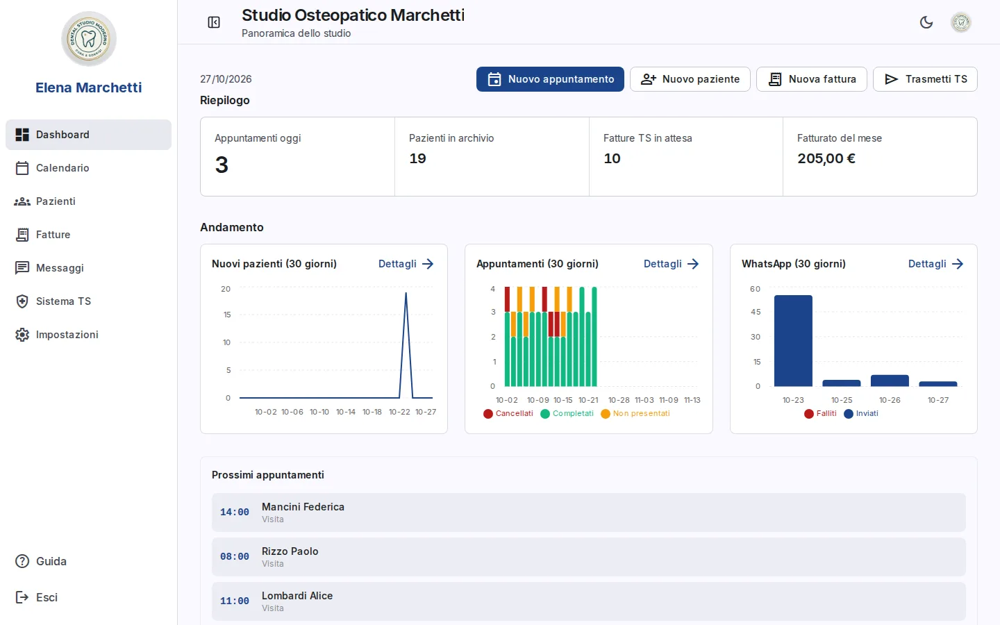
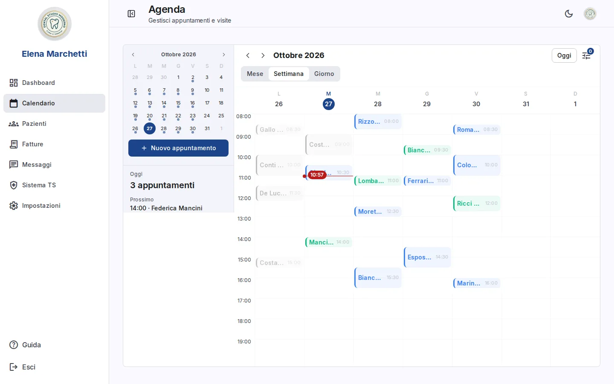
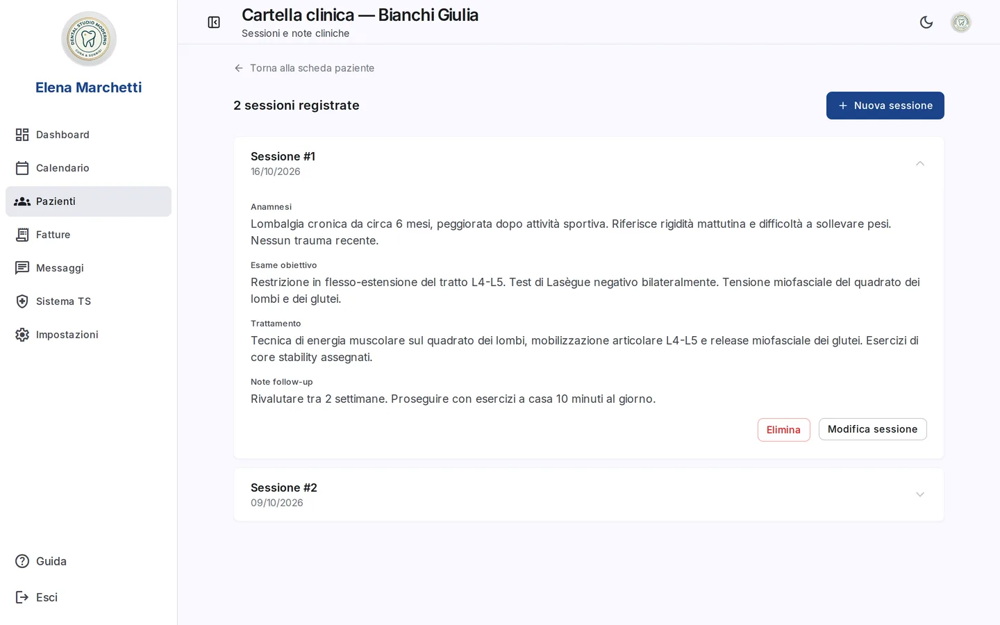
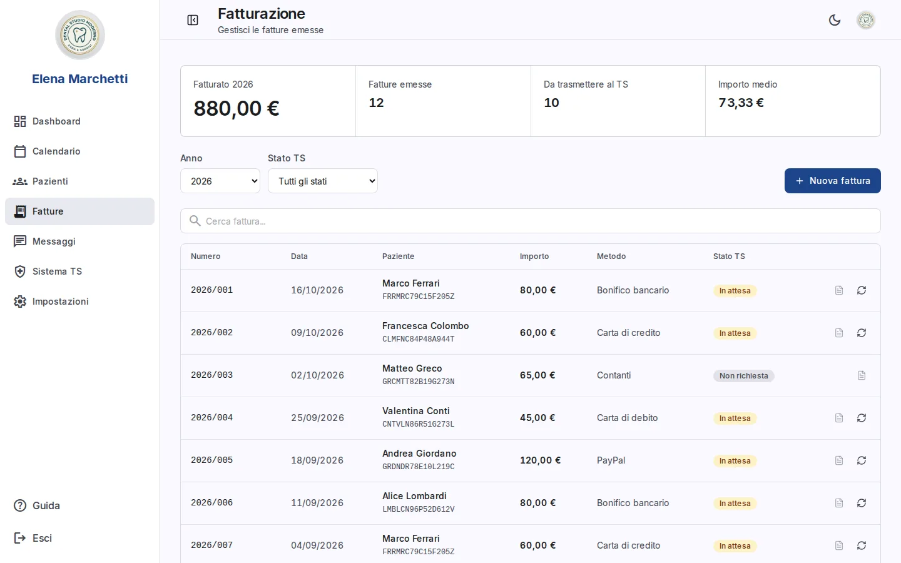
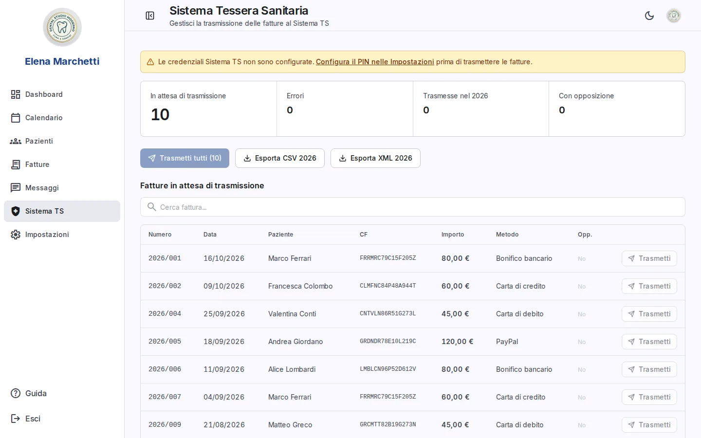

Modulo 01
Agenda
La giornata, senza sorprese.
- Mese, settimana e giorno nello stesso posto.
- Agenda per professionista, con il filtro che resta sul dispositivo.
- Un solo stato condiviso: la doppia prenotazione non è possibile.

Gestionale per studi dentistici
Agenda multi-professionista, cartella clinica cifrata, fatture con PDF e Tessera Sanitaria. Un'unica web app italiana, anche da telefono.


01 — Il problema
Se gestisci uno studio, queste scene le conosci già.
Il calendario vive su un dispositivo, la prenotazione arriva su un altro. Il conflitto lo scopri quando sono entrambi in sala d'attesa.
Il paziente scrive su WhatsApp mentre sei in poltrona. Lo slot resta occupato e nessuno lo riempie.
Numerazione, PDF, incassi: tutto rimandato a fine mese, quando hai meno tempo.
La coda la ricostruisci a mano, con il rischio di trasmettere due volte la stessa prestazione.
Consensi, storico e appunti in tre posti diversi, senza sapere chi ha letto cosa.
Presi uno per uno sembrano dettagli. Insieme sono ore non pagate, ogni settimana.
02 — Il meccanismo
Non è un'agenda con dei moduli intorno. I cinque passi leggono lo stesso dato: il paziente che scrivi in cartella è lo stesso che fatturi e trasmetti.
Appuntamenti e disponibilità per professionista, aggiornati in tempo reale.
Anagrafica, consensi e stato GDPR in un'unica scheda.
Sedute cifrate, numerazione progressiva, audit degli accessi.
Numerazione annuale, PDF e snapshot legale dei dati.
Coda di trasmissione con ricevute, senza doppi invii.
I promemoria WhatsApp partono da qui: conferma, spostamento e disdetta aggiornano l'agenda senza che tu tocchi niente.
03 — Cosa c'è dentro
Ogni studio parte da dove vuole: agenda e pazienti, poi cartella, poi fatture e TS, poi WhatsApp.
Modulo 01
La giornata, senza sorprese.
Modulo 02
Il fascicolo che non si perde.

Modulo 03
Fatture il giorno stesso.

Modulo 04
La coda sotto controllo.

Modulo 05
Il promemoria che arriva davvero.

04 — Il canale
Nessuna app da scaricare per il paziente: riceve un messaggio, risponde con un numero.
05 — Il prodotto, non un mockup
Cinque schermate prese dall'applicazione, non da un prototipo.





La demo navigabile con dati di esempio arriva con la prima call.
06 — Prezzi
Quattro livelli, dal singolo professionista allo studio strutturato. Il preventivo dipende da quanti professionisti e quali moduli attivi.
Per chi inizia e vuole ordine.
Per chi vuole togliere la carta.
Per lo studio strutturato.
Per chi ha molti appuntamenti.
Più professionisti nella stessa agenda? Si parte dal livello Studio.
Il preventivo è scritto e include attivazione e migrazione.
Chiedi il preventivo07 — Dati dei pazienti
Il prodotto fornisce i controlli tecnici. Privacy policy, DPO e registro dei trattamenti restano in capo allo studio.
StudioMS gestisce PDF e adempimenti Tessera Sanitaria: non è un sistema di fatturazione elettronica via SDI.
08 — Domande
No. È una web app: si apre dal browser su desktop, tablet e telefono, senza installazioni.
Su infrastruttura in Unione Europea, con backup cifrati. Ogni studio ha la sua istanza.
No. I moduli si attivano per studio: puoi partire da agenda e pazienti e aggiungere fatturazione e Tessera Sanitaria dopo.
Serve un numero dedicato e la configurazione del webhook con WhatsApp Cloud API di Meta. La facciamo insieme in attivazione.
Sì. Ogni professionista — dentista o igienista — ha agenda, disponibilità e credenziali TS proprie; il titolare vede tutto.
Il setup guidato copre account, dati dello studio, orari e categorie. La configurazione iniziale la facciamo con te in call.
09 — Demo
Compila i campi: prepariamo il messaggio e lo apri in WhatsApp. Lo invii tu, da dove vuoi.
Il messaggio non parte da solo: lo invii tu. Se WhatsApp non si apre, copia il testo e incollalo nella chat.
Preferisci scrivere subito? Apri WhatsApp